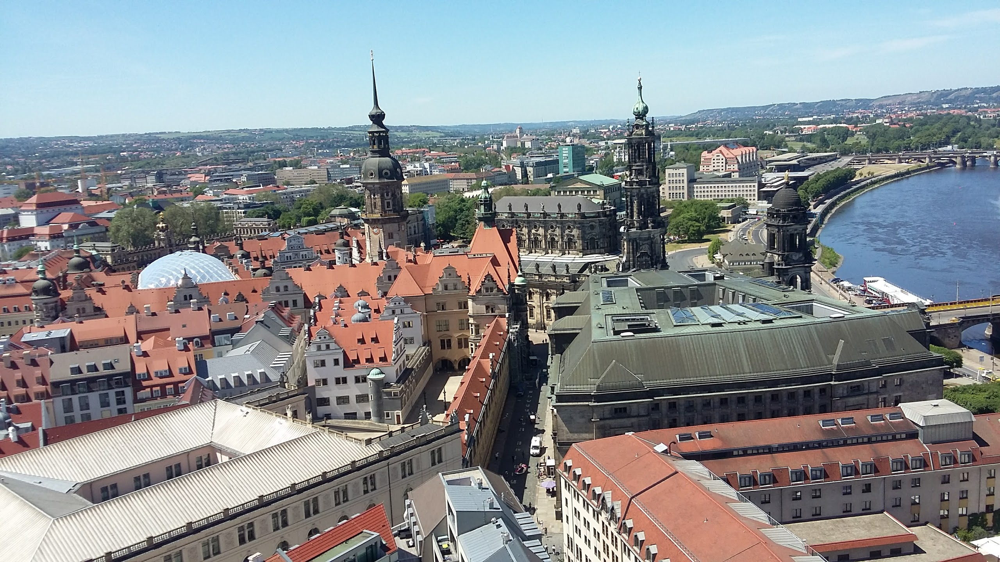
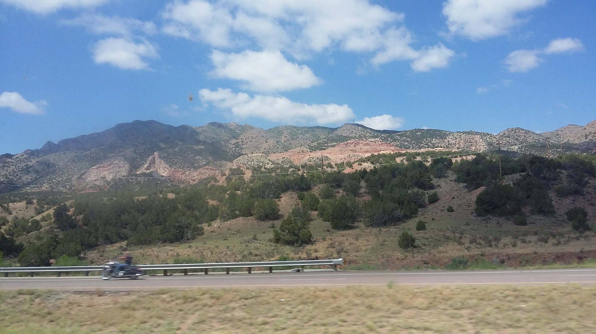

This Site
This site is a small travel showcase, showing off my favorite photos from the last two major vacations I took. Those vacations, both taking place in 2017, took me to two very different locales. One, Colorado Springs, was a trip to nature, seeing mountains and incredible landscapes. The other, Berlin, took me to the urban center of a foreign country, and was primarily focused on education, as it was a school exchange trip.
Germany
I went to Germany at the very end of my 2016-2017 school year, in early June. We flew out of DFW to Munich, Germany, then boarded another flight to Berlin. I stayed there for two weeks, returning on my brother's birthday, June 18th.
Colorado
Within a few weeks from returning home from Germany, I went with a church group to Colorado Springs, stopping at places along the way. When there, several locations, such as Pike's Peak, the Great Sand Dunes National Park, and The Garden of the Gods. It was a wonderful, nature filled trip, and I would love to go back and visit one day.